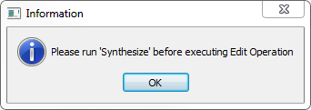
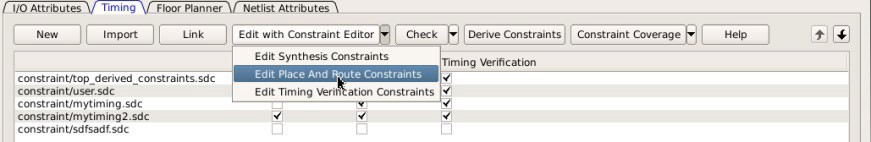

3.5 Libero SoC Constraint Management
(Ask a Question)In the FPGA design world, constraint files are as important as design source files. Constraint files are used throughout the FPGA design process to guide FPGA tools to achieve the timing and power requirements of the design. For the synthesis step, SDC timing constraints set the performance goals whereas non-timing FDC constraints guide the Synthesis tool for optimization. For the Place and Route step, SDC timing constraints guide the tool to achieve the timing requirements whereas Physical Design Constraints (PDC) guide the tool for optimized placement and routing (Floorplanning). For Static Timing Analysis, SDC timing constraints set the timing requirements and design-specific timing exceptions for static timing analysis.
Libero SoC provides the Constraint Manager as the cockpit to manage your design constraint needs. This is a single centralized graphical interface for you to create, import, link, check, delete, and edit design constraints and associate the constraint files to design tools in the Libero SoC environment. The Constraint Manager allows you to manage constraints for SynplifyPro synthesis, Libero SoC Place and Route and the SmartTime Timing Analysis throughout the design process.
3.5.1 Opening Constraint Manager
(Ask a Question)After creating the project, double-click Manage Constraints in the Design Flow window to open the Constraint Manager.
3.5.2 Libero SoC Design Flow
(Ask a Question)3.5.3 Introduction to Constraint Manager
(Ask a Question)The Constraint Manager manages these synthesis constraints and passes them to SynplifyPro:
- Synplify Netlist Constraint File (*.fdc)
- Compile Netlist Constraint File (*.ndc)
- SDC Timing Constraints (*.sdc)
- Derived Timing Constraints (*.sdc)
3.5.3.1 Synplify Netlist Constraints (*.fdc)
(Ask a Question)These are non-timing constraints that help SynplifyPro optimize the netlist. From the Constraint Manager Netlist Attribute tab, import (Netlist Attributes > Import) an existing FDC file or create a new FDC file in the Text Editor (Netlist Attributes > New > Create New Synplify Netlist Constraint). After the FDC file is created or imported, check the check box under synthesis to associate the FDC file with Synthesis.
3.5.3.2 Compile Netlist Constraints (*.ndc)
(Ask a Question)These are non-timing constraints that help Libero SoC optimize the netlist by combining I/Os with registers. I/Os are combined with a register to achieve better clock-to-out or input-to-clock timing. From the Constraint Manager Netlist Attribute tab, import (Netlist Attributes > Import) an existing NDC file or create a new NDC file in the Text Editor (Netlist Attributes > New > Create New Compile Netlist Constraint). After the NDC file is created or imported, check the check box under synthesis to associate the NDC file with Synthesis.
3.5.3.3 SDC Timing Constraints (*.sdc)
(Ask a Question)These are timing constraints to guide SynplifyPro to optimize the netlist to meet the timing requirements of the design. From the Constraint Manager Timing tab, import (Timing > Import) or create in the Text Editor (Timing > New) a new SDC file. After the SDC file is created or imported, check the check box under Synthesis to associate the SDC file with Synthesis.
After the synthesis step, click Edit with Constraint Editor > Edit Synthesis Constraints to add or edit SDC constraints.
3.5.3.4 Derived Timing Constraints (*.sdc)
(Ask a Question)These are timing constraints Libero SoC generates for IP cores used in your design. These IP
cores are available in the Catalog and are family/device-dependent. Once they are
configured, generated, and instantiated in the design, the Constraint Manager can
generate SDC timing constraints based on the configuration of the IP core and the
component SDC. From the Constraint Manager Timing tab, click
Derive Constraints to generate the Derived Timing Constraints
(*.sdc). Click the *derived_constraints.sdc file
to associate it with synthesis.
3.5.3.5 Place and Route Constraints
(Ask a Question)The Constraint Manager manages these constraints for the Place and Route step:
- I/O PDC Constraints
(
*io.pdc) - Floorplanning PDC Constraints
(
*fp.pdc) - Timing SDC constraint file
(
*.sdc)
3.5.3.6 I/O PDC Constraints
(Ask a Question)These are I/O Physical Design Constraints in an *io.pdc file. From the
Constraint Manager I/O Attribute tab, you
can import (I/O Attributes > Import)
or create in the Text Editor (I/O Attributes >
New) an *io.pdc
file.
Check the check box under Place and Route to associate the file with Place and Route.
3.5.3.7 Floorplanning PDC Constraints
(Ask a Question)These are floorplanning Physical Design Constraints in a *fp.pdc file. From the
Constraint Manager Floor Planner tab, you can import
(Floor Planner > Import) or create in the Text Editor
(Floor Planner > New) a *fp.pdc file.
Check the check box under Place and Route to associate the file
with Place and Route.
3.5.3.8 Timing SDC Constraint File (*.sdc)
(Ask a Question)These are timing constraint SDC files for Timing-driven Place and Route. From the Constraint Manager Timing tab, you can import (Timing > Import) or create in the Text Editor (Timing > New) a timing SDC file. Check the check box under Place and Route to associate the SDC file with Place and Route. This file is passed to Timing-driven Place and Route (Place and Route > Configure Options > Timing Driven).
3.5.3.9 Timing Verifications Constraints
(Ask a Question)The Constraint Manager manages the SDC timing constraints for Libero SoC’s SmartTime, which is a
Timing Verifications/Static Timing analysis tool. SDC timing constraints provide the
timing requirements (for example, create_clock and
create_generated_clock) and design-specific timing exceptions (for
example, set_false_path and set_multicycle_path) for
Timing Analysis.
From the Constraint Manager Timing tab, you can import (Timing > Import) or create an SDC timing file in the Text Editor (Timing New). Check the check box under Timing Verifications to associate the SDC timing constraints file with Timing Verifications.
The Constraint Manager allows you to associate and disassociate constraint files with the different tools.
3.5.3.10 Constraint Manager Components
(Ask a Question)The Constraint Manager has four tabs, each corresponding to a constraint type that Libero SoC supports:
- I/O Attributes
- Timing
- Floor Planner
- Netlist Attribute
Clicking the tabs displays the constraint file of that type managed in the Libero SoC project.
3.5.3.11 Constraint File and Tool Association
(Ask a Question)The Libero SoC Design Flow window displays the state of the tool. A green check mark indicates that the tool has run successfully. A warning icon indicates invalidation of the state because the input files for the tool have changed since the last successful run. Association of a new constraint file with a tool or dis-association of an existing constraint file with a tool invalidates the state of the tool with which the constraint file is associated.
All Constraint files except Netlist Attributes can be opened, read, and edited using the following Interactive Tools that you start from the Constraint Manager:
- I/O Editor
- Chip Planner
- Constraint Editor
| Constraint Type | Constraint File Extension | Location Inside Project | Associated with Design Tool | Interactive Tool (for Editing) |
|---|---|---|---|---|
I/O Attributes | PDC (*.pdc) | <proj>\constraints\io\*.pdc | Place and Route | I/O Editor |
Floorplanning | PDC (*.pdc) | <proj>\constraints\fp\*.pdc | Place and Route | Chip Planner |
Timing | SDC (*.sdc) | <proj>\constraints\*.sdc | Synthesis, Place and Route, Timing Verification | Constraint Editor |
Netlist Attributes | FDC (*.fdc) | <proj>\constraints\*.fdc | Synthesis | N/A |
NDC (*.ndc) | <proj>\constraints\*.ndc | Synthesis | N/A |
3.5.3.12 Derive Constraints in Timing Tab
(Ask a Question)The Constraint Manager can generate timing constraints for IP cores used in your design. These IP cores, available in the Catalog, are family- and device-dependent. After they are configured, generated, and instantiated in your design, the Constraint Manager can generate SDC timing constraints based on the configuration of the IP core and the component SDC. A typical example of an IP core for which the Constraint Manager can generate SDC timing constraints is the IP core for Clock Conditioning Circuitry (CCC).
3.5.3.13 Create New Constraints
(Ask a Question)From the Constraint Manager, create new constraints in one of two ways:
- Use the Text Editor
- Use Libero SoC’s Interactive Tools
- Select the tab that corresponds to the type of constraint you want to create.
- Click New.
- When prompted, enter a file name to store the new constraint.
- Enter the constraint in the Text Editor.
- Click
OK.
The Constraint file is saved and visible in the Constraint Manager in the tab you select:
- I/O Attributes constraint
file (
<proj>\io\*.pdc) in the I/O Attributes tab - Floorplanning constraints
(
<proj>\fp\*.pdc) in the Floor Planner tab - Timing constraints
(
<proj>\constraints\*.sdc
- I/O Attributes constraint
file (
- (Optional) Double-click the constraint file in the Constraint Manager to add more constraints to the file.
- Netlist Attribute constraints cannot be created by an Interactive Tool. Netlist Attribute files can only be created with a Text Editor.
- Except for timing constraints for Synthesis, the design needs to be in the post-synthesis state to enable editing/creation of new constraints by the Interactive Tool.
- The
*.pdcor*.sdcfile the Constraint Manager creates is marked [Target]. This denotes that it is the target file. A target file receives and stores new constraints from the Interactive Tool. When you have multiple constraint files of the same type, you can select any one of them as target. When there are multiple constraint files but none of them is set as target, or there are zero constraint files, Libero SoC creates a new file and sets it as target to receive and store the new constraints created by the Interactive Tools.
To create new constraints from the Constraint Manager using Interactive Tools:
- Select the tab that corresponds to the type of constraint you want to create.
- Click Edit to
open the Interactive Tools. The Interactive Tool that Libero SoC opens varies with
the constraint type:
- I/O Editor to edit/create I/O Attribute Constraints. See the I/O Editor User Guide for details.
- Chip Planner to edit/create Floorplanning constraints. See the Chip Planner User Guide for details.
- Constraint Editor to edit/create Timing Constraints. See the Timing Constraints Editor User Guide for details.
- Create the Constraints in the Interactive Tool. Click Commit and Save.
- Check that Libero SoC creates the
following files to store the new constraints:
Constraints\io\user.pdcfile when I/O constraints are added and saved in I/O Editor.Constraints\fp\user.pdcfile when floorplanning constraints are added and saved in Chip Planner.Constraints\user.sdcfile when Timing Constraints are added and saved in Constraint Editor.
3.5.3.14 Constraint File Order
(Ask a Question)When there are multiple constraint files of the same type associated with the same tool, use the Up and Down arrows to sort the order in which the constraint files pass to the associated tool. Constraint file order is important when there is a dependency between constraints files. When a floorplanning PDC file assigns a macro to a region, the region must first be created and defined. If the PDC command for region creation and macro assignment are in different PDC files, the order of the two PDC files is critical.
- To move a constraint file up, select the file and click the Up arrow.
- To move a constraint file down, select the file and click the Down arrow.
Figure 3-51. Move constraint file Up or Down
3.5.4 Import a Constraint File
(Ask a Question)Use the Constraint Manager to import a constraint file into the Libero SoC project. When a constraint file is imported, a local copy of the constraint file is created in the Libero Project.
To import a constraint file:
- Click the tab that corresponds to the type of constraint file you want to import.
- Click Import.
- Navigate to the location of the constraint file.
- Select the constraint file and click Open. A copy of the file is created and appears in Constraint Manager in the tab you have selected.
Link a Constraint File
Use the Constraint Manager to link a constraint file into the Libero SoC project. When a constraint file is linked, a file link rather than a copy is created from the Libero project to a constraint file physically located and maintained outside the Libero SoC project.
To link a constraint file:
- Click the tab that corresponds to the type of constraint file you want to link.
- Click Link.
- Navigate to the location of the constraint file you want to link to.
- Select the constraint file and click Open. A link of the file is created and appears in Constraint Manager under the tab you have selected. The full path location of the file (outside the Libero SoC project) is displayed.
3.5.4.1 Check a Constraint File
(Ask a Question)Use the Constraint Manager to check a constraint file.
To check a constraint file:
- Select the tab for the constraint type to check.
- Click Check.
All constraint files associated with the tool are checked. Files not associated with a tool are not checked.
For Timing Constraints, select from one of the following constraint from the Check drop-down menu:
- Check Synthesis
Constraints. Checks only the constraint files associated with the
Synthesis. This constraint checks the following files:
top_derived_constraints.sdc,user.sdc, andmytiming2.sdc.Check Place and Route Constraints. Checks only the constraint files associated with Place and Route. This constraint checks the following files:
top_derived_constraints.sdc,mytiming.sdc, andmytiming2.sdc.Check Timing Verification Constraints. Checks only the Constraint Files associated with Timing Verification. For the constraint files and tool association shown in the following figure. This constraint checks the following files:
top_derived_constraints.sdc,user.sdc,mytiming.sdc, andmytiming2.sdc.Figure 3-52. Check Constraints
-
Note: The
sdfsadf.sdcConstraint File is not checked because it is not associated with any tool.Figure 3-53. Timing Constraints SDC File and Tool 
Association when a constraint file is checked, the Constraint Manager:
- Checks the SDC or PDC syntax.
- Compares the design objects (pins, cells, nets,
ports) in the constraint file versus the design objects in the netlist (RTL or
post-layout ADL netlist). Any discrepancy (for example, constraints on a design
object that does not exist in the netlist) are flagged as errors and reported in the
*.logfile or message window.
3.5.4.2 Check Result
(Ask a Question)
| Constraint Type | Check for Tools | Required Design State Before Checks | Check Result Details |
|---|---|---|---|
|
I/O Constraints |
Place and Route |
Post-Synthesis |
Libero Message Window |
|
Floorplanning Constraints |
Place and Route |
Post-Synthesis |
Libero Message Window |
|
Timing Constraints |
Synthesis |
Pre-Synthesis |
synthesis_sdc_check.log |
|
Place and Route |
Post-Synthesis |
placer_sdc_check.log |
|
|
Timing Verifications |
Post-Synthesis |
timing_sdc_check.log |
|
|
Netlist Attributes (*.fdc) |
Synthesis |
Pre-Synthesis |
*cck.srr file |
|
Netlist Attributes (*.ndc) |
Synthesis |
Pre-Synthesis |
Libero Log Window |
3.5.4.3 Edit a Constraint File
(Ask a Question)The Edit button in the Constraint Manager allows you to create new constraint files and edit existing constraint files (see 3.5.3.13 Create New Constraints).
*.fdc and *.ndc) files.- Select the tab for the constraint type to edit. An Interactive Tool opens to make the edits.
- Click Edit.
- All constraint files associated with the tool are edited. Files not associated with the tool are not edited.
- When a constraint file is edited, the constraints in the file are read into the Interactive Tool.
- Different Interactive Tools
are used to edit different constraints/different files:
- I/O Editor to edit
I/O Attributes (
<proj>\io\*.pdc). For details, see the I/O Editor User Guide . - Chip Planner to edit
Floorplanning Constraints (
<proj>\fp\*.pdc). For details, see the Chip Planner User Guide (Chip Planner > Help > Reference Manuals) - Constraint Editor to
edit Timing Constraints (
constraints\*.sdc). For details, see the Timing Constraints Editor User Guide (Help > Constraints Editor User’s Guide)Note: I/O constraints, Floorplanning constraints, Timing constraints can be edited only when the design is in the proper state. A message pops up if the file is edited when the design state is not proper for edits. If, for example, you open the Constraints Editor (Constraint Manager > Edit) to edit timing constraints when the design state is not post-synthesis, a pop-up message appears.Figure 3-56. Pop-up Message 
- I/O Editor to edit
I/O Attributes (
- For Timing Constraints, click one of the following to edit from the Edit with
Constraint Editor drop-down menu.
- Edit Synthesis Constraints
- Edit Place and Route Constraints
- Edit Timing Verification Constraints
Figure 3-57. Edit Drop-down Menu For the constraint files and tool association shown in the following Timing Constraint File and Tool Association :
- Edit Synthesis
Constraints reads the following files into the Constraint
Editor:
user.sdcmyuser1.sdc
- Edit Place and
Route Constraints reads the following files into the Constraint
Editor:
- user.sdc
- mytiming2.sdc
- myuser1.sdc
- Edit Timing
Verification Constraints reads the following files into the
Constraint Editor:
- user.sdc
- mytiming2.sdc
Figure 3-58. Timing Constraint File and Tool Association
- Edit Synthesis
Constraints reads the following files into the Constraint
Editor:
- Edit the constraint in the Interactive Tool, save, and exit.
- The edited constraint is written back to the original constraint file when the tool exits.
See the Timing Constraints Editor User Guide (Help > Constraints Editor User’s Guide) for details on how to enter/modify timing constraints.
user.sdc
as the associated constraint file, changing user.sdc invalidates
Place and Route. Next to Place and Route, the green check mark that denotes
successful completion changes to a warning icon when the tool is
invalidated.3.5.5 Constraint Types
(Ask a Question)Libero SoC manages four types of constraints:
- I/O Attributes Constraints: Used to constrain placed I/Os in the design. Examples include setting I/O standards, I/O banks, and assignment to Package Pins, output drive, and so on. These constraints are used by Place and Route.
- Timing Constraints: Specific to the design set to meet the timing requirements of the design, such as clock constraints, timing exception constraints, and disabling certain timing arcs. These constraints are passed to Synthesis, Place and Route, and Timing Verification.
- Floor Planner Constraints: Non-timing floorplanning constraints created by the user or Chip Planner and passed to Place and Route to improve Quality of Routing.
- Netlist Attributes: Microchip-specific attributes that direct the Synthesis tool to synthesize/optimize the design, leveraging the architectural features of the Microchip devices. Examples include setting the fanout limits and specifying the implementation of a RAM. These constraints are passed to the Synthesis tool only.
The following table summarizes the features for each constraint type.
Constraint Type |
File Location |
File Ext. |
User Actions |
Constraints Edited By |
Constraints Used By |
Changes Invalidate Design State? |
|---|---|---|---|---|---|---|
I/O Attributes |
<proj>/constraints/io folder |
*.pdc |
Create New, Import, Link, Edit, Check |
I/O Editor Or user editing the *.pdc file in Text Editor |
Place and Route |
Yes |
Timing Constraints |
<proj>/constraints folder |
*.sdc |
Create New, Import, Link, Edit, Check |
Constraint Editor Or user editing the *.sdc file in Text Editor |
Synplify Place and Route Verify Timing (SmartTime) |
Yes |
Floor Planner Constraints |
<proj>/constraints/fp folder |
*.pdc |
Create New, Import, Link, Edit, Check |
Chip Planner Or user Editing the *.pdc file in Text Editor |
Place and Route |
Yes |
Netlist Attributes |
<proj>/constraints folder |
*.fdc |
Create New, Import, Link, Check |
User to Open in Text Editor to Edit |
Synplify |
Yes |
Netlist Attributes |
<proj>/constraints folder |
*.ndc |
Import, Link, Check |
User to Open in Text Editor to Edit |
Synplify |
YES |
3.5.6 Constraint Manager – I/O Attributes Tab
(Ask a Question)The I/O Attributes tab allows you to manage I/O attributes/constraints for your design’s Inputs, Outputs, and Inouts. All I/O constraint files (PDC) have the *.pdc file extension and are placed in the <Project_location>/constraint/io folder. Available actions are:
- New: Creates a new I/O PDC
file and saves it into the <Project_location>\constraint\io folder. There are
two options:
- Create New I/O Constraint
- Create New I/O Constraint From Root Module -- This will pre-populate the PDC file with information from the Root Module
- Having selected the create
method:
- When prompted, enter the name of the constraint file.
- The file is initially opened in the text editor for user entry.
- Import: Imports an
existing I/O PDC file into the Libero SoC project. The I/O PDC file is copied into
the
<Project_location>\constraint\io folder.
- Link: Creates a link in the project’s constraint folder to an existing I/O PDC file (located and maintained outside of the Libero SoC project).
- Edit: Opens the I/O Editor tool to modify the I/O PDC file(s) associated with the Place and Route tool.
- View: Opens the I/O Editor tool to view the I/O PDC file(s) associated with the Place and Route tool. You cannot save/commit any changes made to the constraints file. However, you can export the PDC file(s) using the I/O Editor.
- Check: Checks the legality of the PDC file(s) associated with the Place and Route tool against the gate level netlist.
When the I/O Editor tool is started or the constraint check is performed, all files associated with the Place and Route tool are being passed for processing.
Right-click the I/O PDC files to access the available actions:
- Set/UnSet as Target: Sets or clears the selected file as the target to store new constraints created in the I/O Editor tool. Newly created constraints only go into the target constraint file. Only one file can be set as target. This option is not available for linked files.
- Open in Text Editor: Opens the selected constraint file in the Libero Text Editor.
- Clone: Copies the file to a file with a different name. The original file name and its content remain intact. This option is not available for linked files.
- Rename: Renames the file to a different name. This option is not available for linked files.
- Copy File Path: Copies the file path to the clipboard.
- Delete: Deletes the file from the project and from the disk. This option is not available for linked files.
- Unlink: Removes the linked file from the project. The original file is untouched. This option is only available for linked files.
- Unlink: Copy file locally: Removes the link and copies the file into the <Project_location>\constraint\io folder. This option is only available for linked files.
3.5.6.1 File and Tool Association
(Ask a Question)Each I/O constraint file can be associated or disassociated with the Place and Route tool. Check the check box under Place and Route to associate or disassociate the file from the tool.
3.5.6.2 I/O Settings
(Ask a Question)| Setting | Description |
|---|---|
| Reserve Pins for Device Migration | Reserves pins in the currently selected device that are not bonded in a device or list of devices you might later decide to migrate your design to. Select the target device(s) you might migrate to later to ensure that there will be no device/package incompatibility if you migrate your design to that device. |
| Reserve Pins for Probes |
|
3.5.7 IO Advisor (SmartFusion 2, IGLOO 2, and RTG4)
(Ask a Question)The IO Advisor allows you to balance the timing and power consumption of the IOs in your design. For output I/Os, it offers suggestions about Output Drive and Slew values that meet (or get as close as possible to) the timing requirements and generates the lowest power consumption. For Input I/Os, it offers suggestions on On-Die Termination (ODT) Impedance values (when the ODT Static is ON) that meet (or get as close as possible to) the timing requirements and generates the lowest power consumption.
Timing data information is obtained from the Primary analysis scenario in SmartTime. Power data is obtained from the Active Mode in SmartPower.
From the Design Flow window, select Manage Constraints > Open Manage Constraints View > I/O Attributes > Edit > Edit with I/O Advisor.
3.5.7.1 Introduction
(Ask a Question)The Introduction screen provides general information about the IO Advisor. Navigational panels allow you to navigate the following panels:
- Output Load. Displays the IO load Power and Delay values for Outputs and Inouts.
- Output Drive and Slew. Displays the Output Drive and Slew for Outputs and Inouts.
- ODT & Schmitt Trigger. Displays the ODT Static (On/Off), the ODT Impedance value (Ohms) for Inputs and Inouts and the Schmitt Trigger (ON/OFF).
All steps in the IO Advisor are optional.
3.5.7.2 Output Load
(Ask a Question)The Output Load panel displays the load of all output/inout ports in your design.
The display is sorted by Initial or Current value and is selectable in the Sort By drop-down menu.
Tooltips are available for each cell of the Table. For output and inout ports, the tooltip displays the Port Name, Macro Name, Instance Name, and Package Pin. Inout ports are identified by a blue bubble icon.
3.5.7.3 Search and Regular Expressions
(Ask a Question)To search for a specific Port, enter the Port Name in the Port Name Search field and click Search. Regular expressions are accepted for the search. All Port Names matching the regular expression are displayed. The regular expression “FDDR*”, for example, results in all the output ports beginning with FDDR in the Port Name appearing in the display.
3.5.7.4 Status Column
(Ask a Question)The icon in the Status column displays the status of the output port.
| Icon | Status | Description |
|---|---|---|
|
OK |
The I/O attributes match the suggestion in the Output Drive and Slew table. | |
|
|
Error |
The Timing constraints for this I/O are not met in the Output Drive and Slew table. |
|
Information |
To improve the power and/or timing of the I/O, apply the suggestion in the Output Drive and Slew table. |
3.5.7.5 Column Display and Sorting
(Ask a Question)To hide or unhide a column, click on the drop-down menu of a column header and select Hide Column or Unhide All Columns.
To sort the contents of a column, select the column header, and from the right-click menu, select Sort A to Z, Sort Z to A, Sort Min to Max, or Sort Max to Min as appropriate.
3.5.7.6 Set Output Load
(Ask a Question)To set the output load of a port, click the Port and click Set Output Load or edit the value in the Current Output Load cell. Initial value remains unchanged.
3.5.7.7 Restore Initial Value
(Ask a Question)To restore a Port’s output load to the initial value, select the output port and click Restore Initial Value. The current value changes to become the same value as the initial value.
3.5.7.8 Output Drive and Slew
(Ask a Question)The Output Drive and Slew page displays the Output Drive and Slew of all output/inout ports of your design.
The display can be sorted according to the initial current or suggested values. To change the sorting, use the Sort By drop-down list.
Three values are displayed for Output Drive and Slew of each IO output/inout port:
- Initial. This is the initial value when the IO Advisor is launched.
- Current. This is the current value which reflects any changes you have made, including suggestions you have accepted from the IO Advisor.
- Suggested. This is the suggested value from the IO Advisor for optimum power and timing performance.
3.5.7.9 How the Suggested Values Are Computed
(Ask a Question)The IO Advisor provides suggestions for output drive and slew values according to the following criteria:
- If you have set no output delay constraint for the port, the IO Advisor suggests IO attribute values that generate the lowest power consumption.
- If you set an output delay constraint on the port, the IO Advisor suggests IO attribute values that generates the lowest power consumption and positive timing slacks. If the slacks of all attribute combinations are negative, the IO Advisor suggests an attribute combination (Drive strength and slew) that generates the least negative slack.
- Select the out drive and/or the slew current value cell.
- Click the cell to open the combo box.
- Choose the value you want from the set of valid values.
To change multiple I/Os, select multiple I/Os (CTRL+Click), click Set Slew or Set Outdrive, select the value, and click OK.
3.5.7.10 Apply Suggestion
(Ask a Question)To apply the suggested value to a single output port, select the output port and click Apply Suggestion.
To apply the suggested values to multiple ports, select multiple ports (CTRL+Click) and click Apply Suggestion.
3.5.7.11 Adjust ODT and Schmitt Trigger
(Ask a Question)This page allows you to set the Schmitt Trigger setting (ON/OFF), On-Die Termination (ODT) Static setting (ON/OFF), and the ODT Impedance (in Ohms) to valid values for all Input/Inout IOs of your design. The IO Advisor page instantly gives you the Power (in uW) and Delay (in ns) values when you make changes. If the suggested values meet your design’s power and/or timing requirements, you can accept the suggestions and continue with your design process.
Note: ODT is not allowed for 2.5V or higher single-ended signals. It is allowed for differential signals.
3.5.7.12 Search and Regular Expressions
(Ask a Question)To search for a specific Port, enter the Port Name in the Port Name
Search field and click Search. Regular
expressions are accepted for the search. All Port Names matching the regular expression
are displayed. For example, the regular expression RESET* results in
the input/inout ports with the port name beginning with RESET
appearing in the display.
3.5.7.13 Status Column
(Ask a Question)The icon in the Status Column displays the status of the input/inout ports.
| Icon | Status | Description |
|---|---|---|
|
OK |
The I/O attributes match the suggestion in the Adjust ODT and Schmitt Trigger table. | |
|
|
Error |
The Timing constraints for this I/O are not met in the Adjust ODT and Schmitt Trigger table. |
|
Information |
To improve the power and/or timing of the I/O, apply the suggestion in the Adjust ODT and Schmitt Trigger table. |
3.5.7.14 Column Display and Sorting
(Ask a Question)To hide or unhide a column, click on the drop-down menu of a column header and select Hide Column or Unhide All Columns.
To sort the contents of a column, select the column header, and from the right-click menu, select Sort A to Z, Sort Z to A, Sort Min to Max, or Sort Max to Min as appropriate.
3.5.7.15 Set Schmitt Trigger
(Ask a Question)For IO Standards that support the Schmitt Trigger, you can turn the Schmitt Trigger ON or OFF. Select the I/O and click Set Schmitt Trigger to toggle between ON and OFF. Your setting is displayed in the Schmitt Trigger column for the I/O.
3.5.7.16 Set ODT Static
(Ask a Question)For IO standards that support ODT static settings, you can turn the ODT Static ON or OFF according to your board layout or design needs:
- ON. The Termination resistor for impedance matching is located inside the chip.
- OFF. The Terminator resistor for impedance matching is located on the printed circuit board.
To turn the ODT Static ON or OFF, click to select the input/inout port and from the pull-down menu, toggle between ON and OFF. To turn ODT Static ON or OFF, click Set ODT Static and toggle between ON and OFF.
3.5.7.17 Set ODT Impedance (Ω)
(Ask a Question)For each input/inout in your design, valid ODT Impedance values (in Ohms) are displayed for you to choose from. Click to select the input/inout port and select one of the valid ODT impedance values from the pull-down list in the ODT Impedance column. You can also click Set ODT Impedance to choose one of the valid ODT impedance values. The Power and Delay values might vary when you change the ODT Impedance (Ω).
Note: When ODT_static is set to OFF, changing the
ODT_Impedance value has no effect on the Power and Delay values.
The Power and Delay values change with ODT_Impedance value changes only
when ODT_static is set to ON.
3.5.7.18 Apply Suggestion
(Ask a Question)To apply the suggested value to a single input/inout port, select the port and click Apply Suggestion. To apply the suggested values to multiple ports, select the multiple ports (Control-click) and click Apply Suggestion.
3.5.7.19 Restore Initial Value
(Ask a Question)To restore an input/inout port’s attribute values to the initial values, select the port and click Restore Initial Value. The current value changes to the same value as the initial value.
3.5.7.20 Summary of Changes
(Ask a Question)This screen provides a summary of the timing and power changes you made in the IO Advisor.
To save the summary, click Save Summary, select a save format (text or CSV), and click OK.
To commit IO Attribute changes you to the database (the *io_pdc file), choose
Save from the File menu
(File > Save), an then click OK in
the dialog that appears.
pdc file and database, the summary refreshes automatically and
shows the latest data as per the latest database.3.5.8 Constraint Manager: Timing Tab
(Ask a Question)The Timing tab allows you to manage timing constraints throughout the
design process. Timing constraints files (SDC) have the *.sdc file
extension and are placed in the <Project_location>\constraint
folder.
Available options are:
- New. Creates a new timing
SDC file and saves it in the
<Project_location>\constraintfolder. When prompted, enter the name of the constraint file. The file is initially opened in the text editor for user entry.Figure 3-68. Create New SDC Dialog Box
- Import. Imports an
existing timing SDC file into the Libero SoC project. The timing SDC file is copied
into the
<Project_location>\constraintfolder. - Link. Creates a link in the project’s constraint folder to an existing timing SDC file (located and maintained outside of the Libero SoC project).
- Edit. Opens
the Timing Constraints Editor (see the
Timing Constraints Editor User Guide
for details) to modify the SDC file(s) associated with one of the
three tools:
- Synthesis. Loads the timing SDC file(s) associated with the Synthesis tool into the constraints editor for editing.
- Place and Route. Loads the timing SDC file(s) associated with the Place and Route tool into the constraints editor for editing.
- Timing
Verification. Loads the timing SDC file(s) associated with
the Timing Verification tool into the constraints editor for editing.
Figure 3-69. Timing Constraints Edit Options in Constraint Manager
- Check. Check
the legality of the SDC file(s) associated with one of the following three tools:
- Synthesis. Check is performed against the pre-synthesis HDL design.
- Place and Route. Check is performed against the post-synthesis gate level netlist.
- Timing
Verification. Check is performed against the post-synthesis
gate level netlist.
Figure 3-70. Timing Constraints Check Options in Constraint Manager
- Derive
Constraints. Generates a timing SDC file based on your configuration
of the IP core, components, and component SDC, which includes
create_clockandcreate_generated_clockSDC timing constraints. This file is named<top_level_> derived_constraints.sdc. The component SDC and the generated<root>_derived_constraint.sdcfiles are dependent on the IP cores and vary with the device family.create -name {REF_CLK_PAD_0} -period 5 [ get_ports { REF_CLK_PAD_0 } ] create_generated_clock -name {PF_TX_PLL_0/txpll_isnt_0/DIV_CLK} -divide_by 2 - source [ get_pins { PF_TX_PLL_0/txpll_isnt_0/REF_CLK_P } ] [ get_pins { PF_TX_PLL_0/txpll_isnt_0/DIV_CLK } ]
- Constraint
Coverage. Displays a pull-down list for selecting the Generate Place
and Route Constraint Coverage report and Generate Timing Verification Constraint
Coverage report.
Figure 3-71. Constraint Coverage Options for Timing Constraints in Constraint Manager
The generated report appears in the respective nodes of the report view (Design > Reports).
If the SmartTime Constraint Editor tool is started or the constraint check is performed, all the files associated with the targeted tool – Synthesis, Place and Route, Timing Verification – are being passed for processing.
<project>\constraint folder.Right-click the timing SDC files to access the available options for each constraint file:
- Set/Unset as Target. Sets or clears the selected file as the target to store new constraints created in the SmartTime Constraint Editor tool. Newly created constraints only go into the target constraint file. Only one file can be set as target, and it must be a PDC or SDC file. This option is not available for the derived constraint SDC file. This option is not available for linked files.
- Open in Text Editor. Opens the selected constraint file in the Libero Text Editor.
- Clone. Copies the file to a file with a different name. The original file name and its content remain intact. This option is not available for linked files.
- Rename. Renames the file to a different name. This option is not available for linked files.
- Copy File Path. Copies the file path to the clipboard.
- Delete. Deletes the selected file from the project and the disk. This option is not available for linked files.
- Unlink. Removes the linked file from the project. The original file is untouched. This option is only available for linked files.
- Unlink: Copy file locally.
Removes the link and copies the file into the
<Project_location>\constraintfolder. This option is available for linked files only.
File and Tool Association
Each timing constraint file can be associated or disassociated with any one, two, or all three of the following tools:
- Synthesis
- Place and route
- Timing Verification
Check the check box under Synthesis, Place and Route, or Timing Verification to associate the file with or disassociate the file from the tool. When a file is associated, Libero passes the file to the tool for processing.
3.5.8.1 Example (PolarFire)
(Ask a Question)In the preceding figure, when Edit Synthesis Constraint is selected,
user.sdc, top_derived_constraints.sdc, and
mytiming2.sdc are read because these three files are associated with
Synthesis). The files mytiming.sdc and sdfsadf.sdc are not
read because they are not associated with Synthesis. When the SmartTime Constraint Editor
opens for editing, the constraints from all the files except sdfsadf.sdc are
read and loaded into the Constraint Editor. Any changes you make and save in the Constraint
Editor are written back to the files.
sdfsadf.sdc Constraint
File is not checked because it is not associated with any tool.3.5.8.2 Example 1: RTG4, SmartFusion 2, and IGLOO 2
(Ask a Question)When Edit Synthesis Constraint is selected, as shown in the following
figure, the files prep1_derived_constraint.sdc and
newtiming.sdc are read because they are associated
with Synthesis. The files TVS_Demo_derived_constraints.sdc
and prep1_sdc.sdc are not read because they are not
associated with Synthesis. When the SmartTime Constraints Editor opens for
edit, the files prep1_derived_constraint.sdc and
newtiming.sdc are read and loaded into the
Constraints Editor. Any changes made to the constraints in these two files
and saved in the Constraints Editor are written back to the two files.
mytiming.sdc and
sdfsadf.sdc are not read because they are not
associated with Synthesis. When the SmartTime Constraint Editor opens for
edit, the constraints from all the files except sdfsadf.sdc
are read and loaded into the Constraint Editor. Any changes made and saved
in the Constraint Editor are written back to the files.3.5.8.3 Example 2: RTG4, SmartFusion 2, and IGLOO 2
(Ask a Question)When Check Synthesis Constraint is selected, as shown in the following
figure, the files prep1_derived_constraints.sdc and
newtiming.sdc are checked because these two files
are associated with Synthesis and the files
TVS_Demo_derived_constraints.sdc and
prep1_sdc.sdc are not checked because they are not
associated with Synthesis.
When Check for Timing Verification is selected, the files
prep1_derived_constraints.sdc,
newtiming.sdc, and prep1_sdc.sdc
are checked because they are associated with Timing Verification. The file
TVS_Demo_derived_constraints.sdc is not checked
because it is not associated with Timing Verification.
3.5.9 Derived Constraints
(Ask a Question)Libero SoC can generate SDC timing constraints for design components when the root of the design is defined. Click Derive Constraints in the Constraint Manager’s Timing tab to generate SDC timing constraints for your design’s components.
The generated constraint file is named <root>_derived.sdc and is created
by instantiating component SDC files created by IP configurators (for example, CCC) and
oscillators used in the design.
The <root>_derived.sdc file is associated by default to the Synthesis,
Place and Route, and Timing Verification tool. You can change the file association in
the Constraint Manager by checking or unchecking the check box under the tool.
- Configure and generate the IP Core.
- From the Constraint Manager’s
Timing tab, click Derive
Constraints (Constraint Manager > Timing > Derive
Constraints).
The Constraint Manager generates the
<root>_derived_constraints.sdcfile and places it in the Timing tab along with other user SDC constraint files. - When prompted about whether you want the
Constraint Manager to automatically associate the derived SDC file to Synthesis,
Place and Route, and Timing Verification, click Yes to accept
automatic association or No, and then check or uncheck the
appropriate check box for tool association.
Microchip recommends the
<root>_derived_constraints.sdcbe always associated with all three tools: Synthesis, Place and Route, and Verify Timing. Before running SynplifyPro Synthesis, associate the<root>_derived_constraints.sdcfile with Synthesis and Place and Route. This will ensure that the design objects (such as nets and cells) in the<root>_derived_constraints.sdcfile are preserved during the synthesis step and the subsequent Place and Route step will not error out because of design object mismatches between the post-synthesis netlist and the<root>_derived_constraints.sdcfile.
3.5.10 Automatic Clock Jitter Constraint
(Ask a Question)Libero SoC calculates a design's "system jitter" automatically based on the device's
global net clock jitter of the clock domain with the highest load. Libero assumes that
the average toggle rate in each domain is 30%. For cases where 30% avg. toggle rate is
not appropriate, see the device datasheet global clock jitter specifications to estimate
the global net clock jitter at different effective toggle rates. After the global clock
jitter is ascertained for the design's highest loaded clock domain, you can override the
automatically calculated system jitter using the set_system_jitter SDC
constraint (see the
Timing Constraints Editor User Guide
).
Libero SoC also calculates the clock generation path contribution to the clock jitter based on the device datasheet specifications for blocks such as CCCs, internal RC Oscillators, and XCVRs (PolarFire, PolarFire SoC, RT PolarFire, and RTG4).
You are responsible for specifying input clock jitter on externally sourced clocks (see
the set_input_jitter SDC constraint in the Timing Constraints Editor User Guide).
For RTG4, you should account for the device datasheet Input Buffer clock jitter
specification when specifying the input jitter on external clock inputs. This guidance
also applies to CCC/PLL reference clocks sourced from I/O buffers. In addition, RTG4
users should account for the device datasheet specification on effective recovered clock
jitter from the CCC SpaceWire Clock Recovery circuits by applying the
set_input_jitter constraint to the clock object created on the
SpaceWire STROBE input.
For each clock domain, Libero SoC creates a clock uncertainty constraint whose value is
the larger of the system jitter or the clock's individual clock generation/input path.
The project's /designer/<root>/ subfolder will contain
place_route.sdc and verify_timing.sdc that
contains the automatic clock uncertainty constraints used for the Place and Route and
Verify Timing design flow steps. These tool-generated files are not to be modified by
end-users.
After Place and Route and Verify Timing, Libero SoC generates jitter report files called
place_and_route_jitter_report.txt and
timing_analysis_jitter_report.txt, respectively. This report
appears in the Libero SoC reports tab and is stored on disk in the project's
/designer/<root>/ subfolder.
If you have separate SDC files for Place and Route versus Verify Timing, make sure the
desired set_input_jitter and set_system_jitter
constraints exist in both files.
To obtain more clock jitter margin, you can also specify
set_clock_uncertainty constraints in your SDC input files for Place
and Route and Verify Timing. The user clock uncertainty will be added to the Libero SoC
automatically derived clock uncertainty values, with the sum reflected in the
place_route.sdc and verify_timing.sdc files,
respectively. Microchip recommends reviewing the applied clock jitter values in the
respective jitter_report.txt files.
When determining a clock domain's system jitter, Libero SoC considers the impact of switching activity from loads in synchronous clock domains. This means that loads on synchronous domains are counted together when determining the largest clock domain to use for the design's global net system jitter calculation. By default, external clock inputs are considered to be asynchronous to each other for the purposes of calculating the system jitter.
During timing analysis and when viewing expanded path reports, a clock jitter line item appears in the calculation corresponding to the applied clock uncertainty. By default, hold time (min-delay) calculations on a single clock edge of a single clock domain do not have clock jitter constraints applied. In contrast, paths involving multiple clock domains, multiple clock edges, or external interfaces include clock jitter in the timing analysis.
3.5.11 Constraint Manager: Floor Planner Tab
(Ask a Question)The Floor Planner tab allows you to manage floorplanning constraints.
Floorplanning constraints files (PDC) have the *.pdc file extension and
are placed in the <Project_location>\constraint\fp folder.
Available options are:
- New. Creates a new
floorplanning PDC file and saves it into the
<Project_location>\constraint\fpfolder. - Import. Imports an
existing floorplanning PDC file into the Libero SoC project. The floorplanning PDC
file is copied into the
<Project_location>\constraint\fpfolder.
- Link. Creates a link in the project’s constraint folder to an existing floorplanning PDC file located and maintained outside of the Libero SoC project.
- Edit. Opens the Chip Planner tool to modify the floorplanning PDC file(s) associated with the Place and Route tool.
- View. Opens the Chip Planner tool to view the floorplanning PDC file(s) associated with the Place and Route tool. You cannot save/commit any changes made to the constraints file. However, you can export the PDC file(s) using Chip Planner.
- Check. Checks the legality of the PDC file(s) associated with the Place and Route tool against the gate level netlist.
When the Chip Planner tool is started or the constraint check is performed, all files associated with the Place and Route tool are passed for processing.

Right-click the floorplanning PDC files to access the available options:
- Set/Unset as Target. Sets or clears the selected file as the target to store new constraints created in the Chip Planner tool. Newly created constraints only go into the target constraint file. Only one file can be set as target. This option is not available for linked files.
- Open in Text Editor. Opens the selected constraint file in the Libero Text Editor.
- Clone. Copies the file to a file with a different name. The original file name and its content remain intact. This option is not available for linked files.
- Rename. Renames the file to a different name. This option is not available for linked files.
- Copy File Path. Copies the file path to the clipboard.
- Delete. Deletes the selected file from the project and the disk. This option is not available for linked files.
- Unlink. Removes the linked file from the project. The original file is untouched. This option is only available for linked files.
- Unlink: Copy file locally. Removes the link and copies the file into the <Project_location>\constraint\fp folder. This option is only available linked files only.
3.5.11.1 File and Tool Association
(Ask a Question)Each floorplanning constraint file can be associated or disassociated to the Place and Route tool. Check the check box under Place and Route to associate or disassociate the file from the tool.
When a file is associated, Libero passes the file to the tool for processing.
3.5.12 Constraint Manager: Netlist Attributes Tab
(Ask a Question)The Netlist Attributes tab allows you to manage netlist attribute
constraints to optimize your design during the synthesis and/or compile process. Timing
constraints must be entered using SDC files managed in the Timing tab. Netlist Attribute
constraints files are placed in the <Project_location>\constraint
folder. Libero SoC manages two types of netlist attributes:
- FDC constraints are used to optimize the HDL
design using Synopsys SynplifyPro synthesis engine and have the
*.fdcextension. - NDC constraints are used to optimize the post-synthesis netlist with the Libero SoC compile engine and have the *.ndc file extension.
Available options are:
- New. Creates a new FDC or NDC netlist
attribute constraints file in the
<Project_location>\constraintfolder. - Import. Imports an existing FDC or NDC
netlist attribute constraints file into the Libero SoC project. The FDC or NDC
netlist attribute constraints file is copied into the
<Project_location>\constraintfolder. - Link. Creates a link in the project’s constraint folder to an existing FDC or NDC netlist attribute constraints file (located and maintained outside of the Libero SoC project).
- Check. Checks the legality of the FDC and NDC file(s) associated with the Synthesis or Compile tools.

Right-click the FDC or NDC files to access the available options:
- Open in Text Editor. Opens the selected constraint file in the Libero SoC Text Editor.
- Clone. Copies the file to a file with a different name. The original file name and its content remain intact. This option is not available for linked files.
- Rename. Renames the file to a different name. This option is not available for linked files.
- Copy File Path. Copies the file path to the clipboard.
- Delete. Deletes the file from the project and the disk. This option is not available for linked files.
- Unlink. Removes the linked file from the project. The original file is untouched. This option is only available for linked files.
- Unlink: Copy file locally.
Removes the link and copies the file into the
<Project_location>\constraintfolder. This option is only available for linked files.
3.5.12.1 File and Tool Association
(Ask a Question)Each netlist attributes constraint file can be associated with or disassociated from the Synthesis tool.
Check the check box under Synthesis (Compile) to associate/disassociate the file from Synthesis (Compile). When a file is associated, Libero passes the file to Synthesis (Compile) for processing when Synthesis is run.
When Synthesis is ON (Project > Project Settings > Design Flow > Enable synthesis [checked]) for a project, the Design Flow Synthesis action runs both the synthesis engine and the post-synthesis compile engine.
When Synthesis is OFF (Project > Project Settings > Design Flow > Enable synthesis [not checked]) for a project, the Design Flow Synthesis action is replaced by the Compile action and runs the compile engine on the gate-level netlist (EDIF or Verilog) available in the project.
Note: Linked files in Constraint Manager are shown as a relative path if the relative option is set for linked files. If a constraint file is missing during an environment variable change or if a path in an environment variable changes, the Constraint Manager does show any broken links. Therefore, if a constraint file is missing, an error message appears in the log window if you try to access the file.